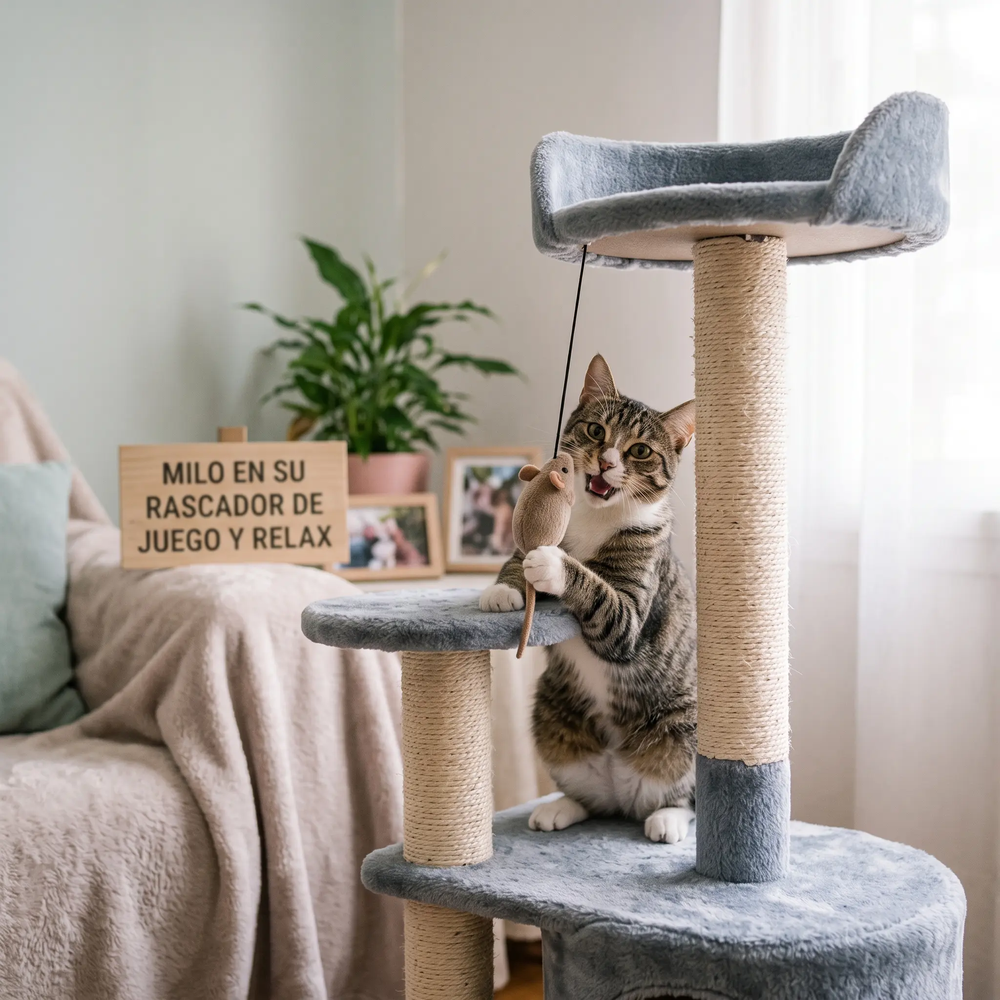
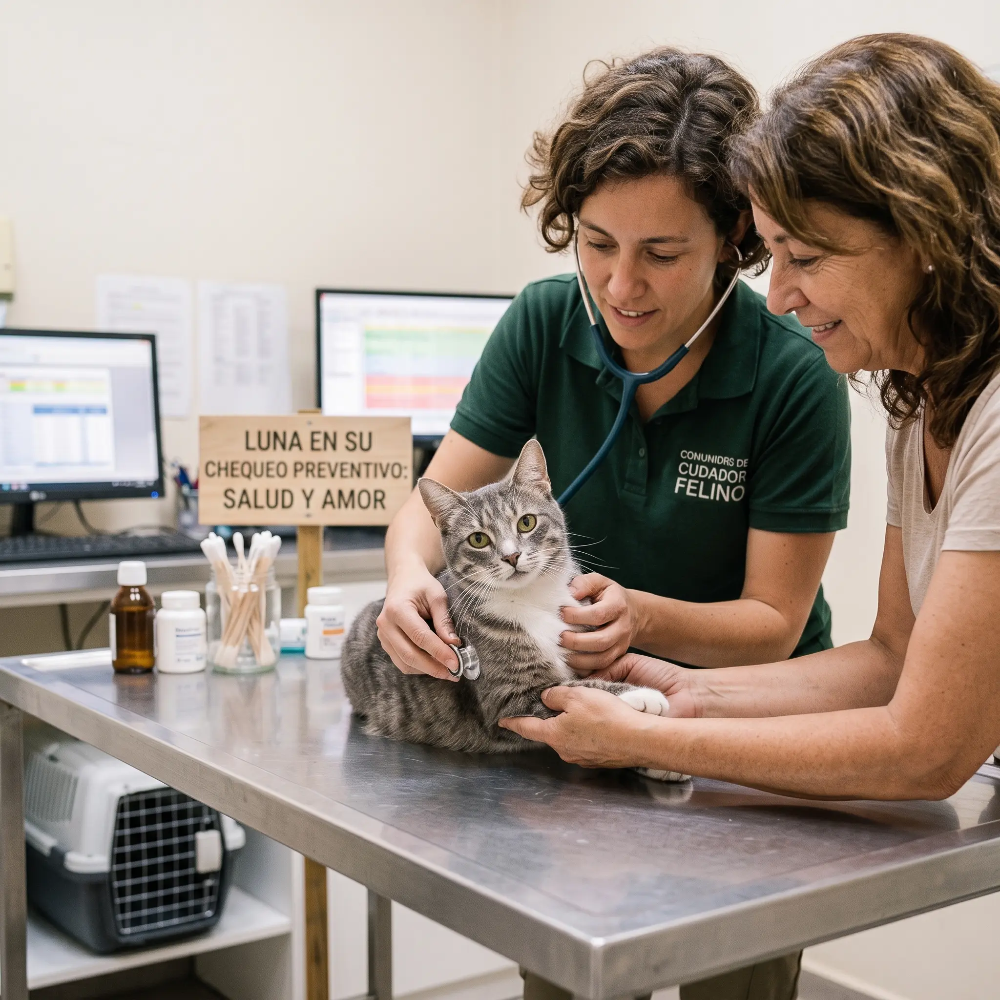
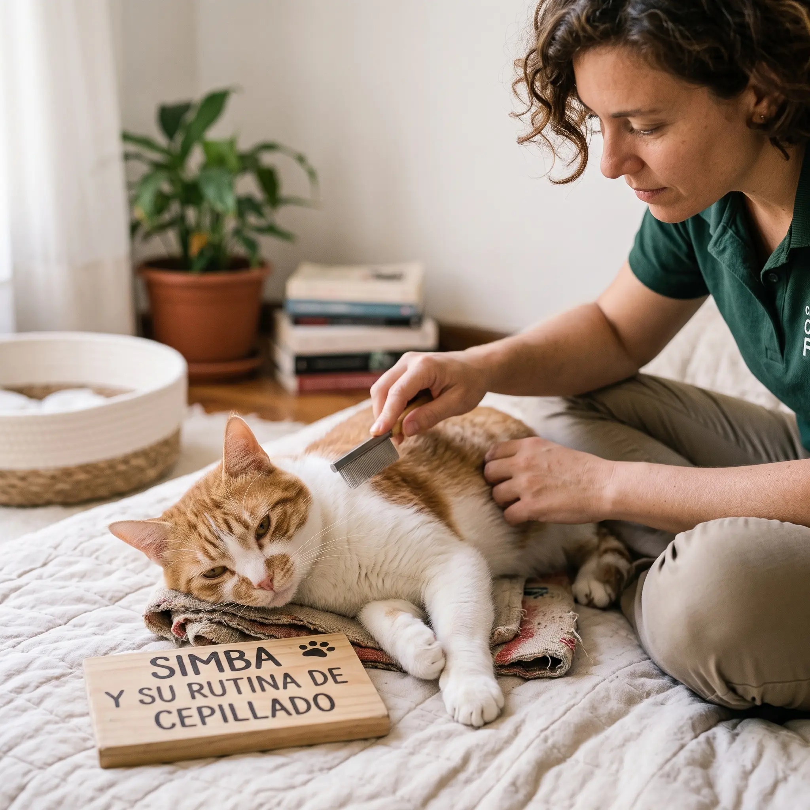
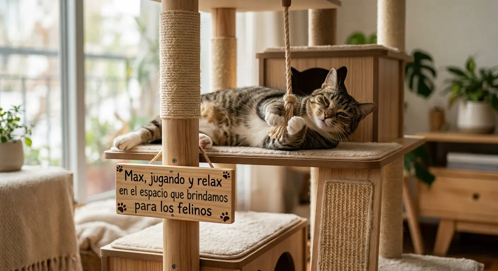
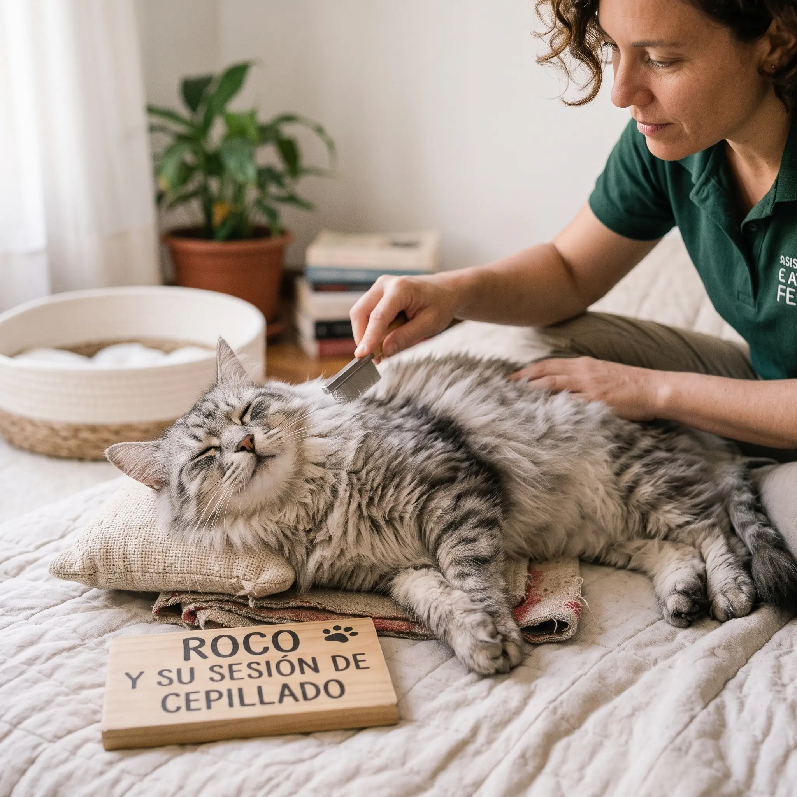
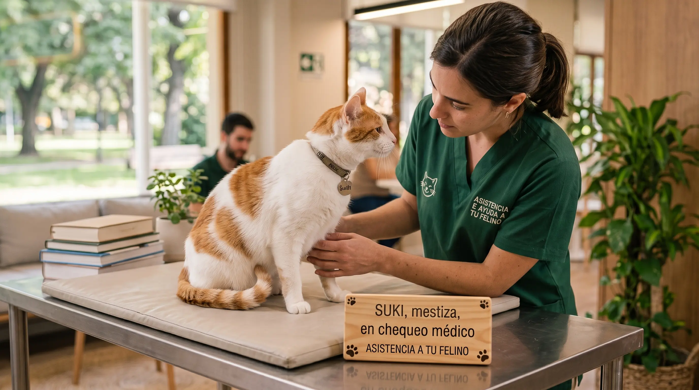

Galería de Nuestra Comunidad
Momentos y Cuidados Felinos
Te compartimos algunas postales de los integrantes de nuestra comunidad y sus rutinas de bienestar.

Milo en su rascador
Enriquecimiento ambiental en el hogar para un felino feliz.

Luna en su chequeo preventivo
Controles periódicos fundamentales para una vida saludable.

Simba y su rutina de cepillado
Cuidado diario del pelaje para evitar bolas de pelo.

Max en el Espacio que brindamos para tu Felino
Momento de relax en el ambiente.

Roco en la Seccion de cepillado que te Brindamos
Cuidado del pelaje del felino, lo ideal para mantenerse radiante.

Suki en su chequeo medico preventivo que Brindamos
Revision preventiva para estar al dia con los sintomas de los felinos.